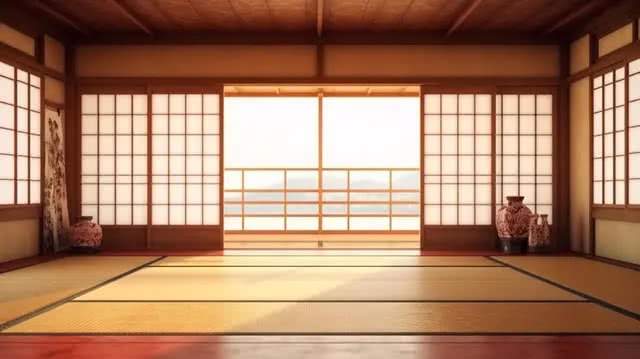
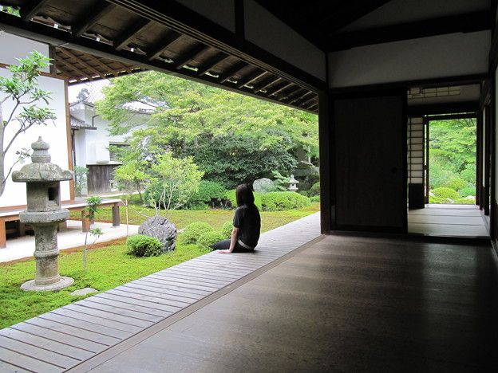
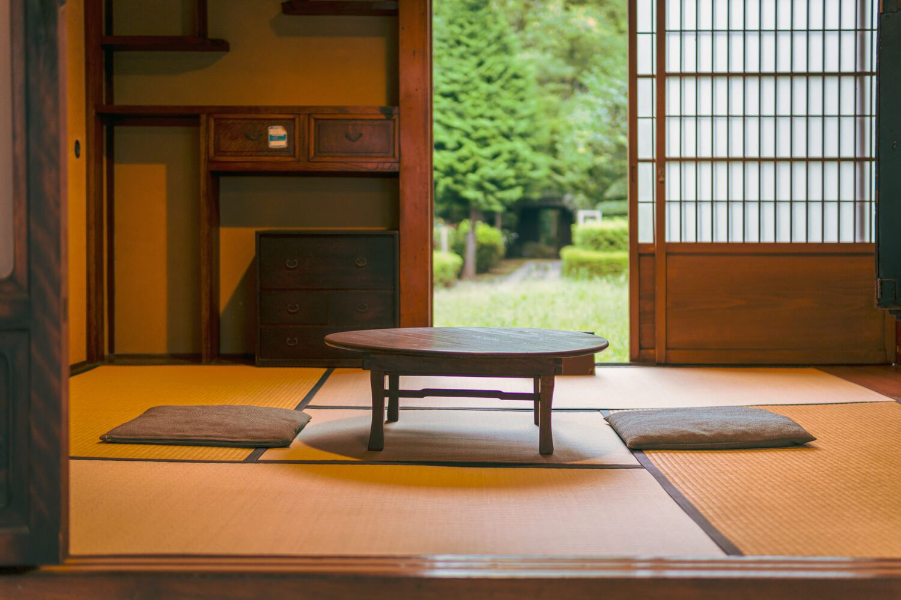
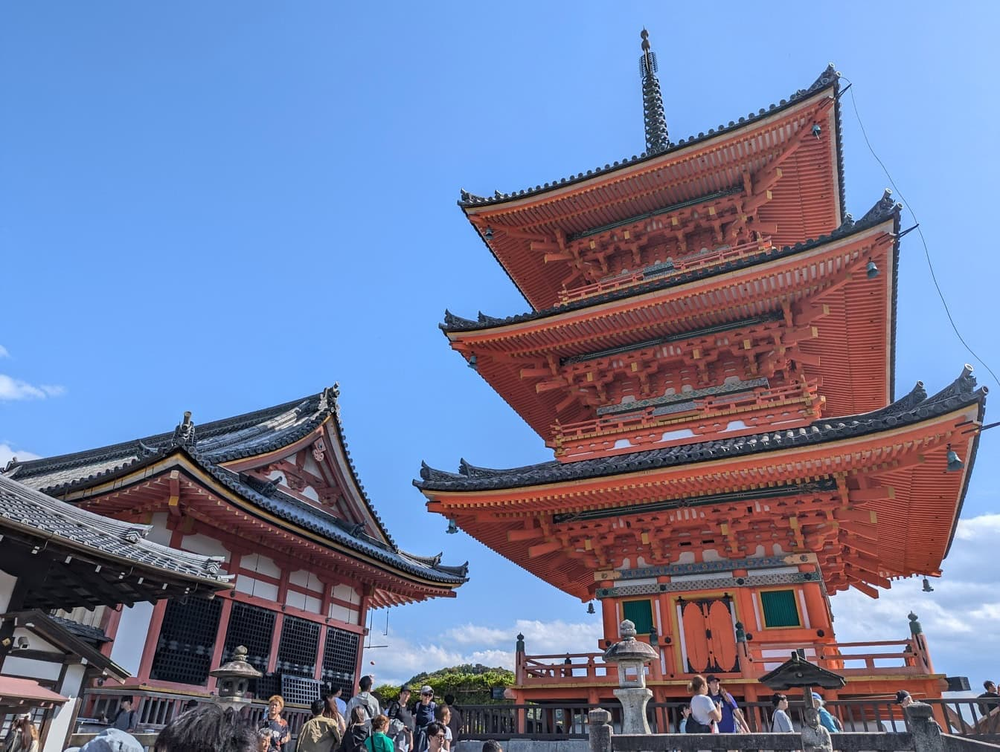

Puertas Shoji
Paneles translúcidos de papel y bambú que difuminan la luz natural y conectan los espacios.
Descubre la belleza del Wabi-Sabi y la armonía estructural
Explora la Arquitectura
Paneles translúcidos de papel y bambú que difuminan la luz natural y conectan los espacios.

Un corredor de madera que bordea la casa, actuando como transición perfecta hacia el jardín.

Esteras de paja de arroz que definen las proporciones de las habitaciones y aportan calidez.

Estructuras espirituales de varios niveles construidas en madera para resistir terremotos.
Un recorrido interactivo por la arquitectura nipona.